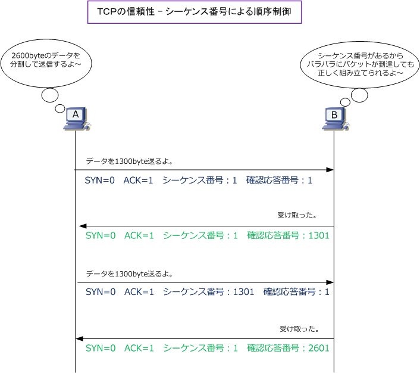
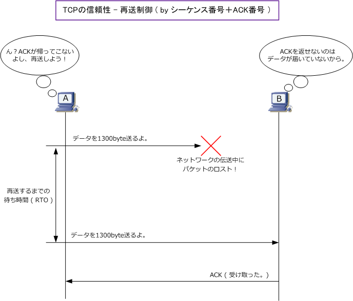

TCP sequence control / Retransmission Control
TCP - 信頼性の確保（順序制御）
TCPでは全てのTCPパケットにシーケンス番号を付与します。以下では、ホストAからホストBに対して 2600byteのデータを分割して送信しています。TCP/IPでは、一度に送信できるデータのサイズ（MSS） に上限があるためこのようにデータの分割を行う必要があります。以下では1300バイトと1300バイト に分割していますが、シーケンス番号の値があるため受信側はもとのデータを正しく組み立てられます。

TCP - 信頼性の確保 ( 再送制御 )
TCPでは、データ送信の度に無事にデータが到達したことを知らせるために確認応答（ACK）を行います。 ホストAからBへデータを送り無事に届けば、ホストBはAに確認応答としてACKビットを立てて返信します。 または、この確認応答がない場合はネットワーク伝送経路の途中でパケットが破棄された可能性があります。 TCPでは一定時間内にACKが帰ってこない場合は、パケットが破棄されたと判断して再度データを送ります。
